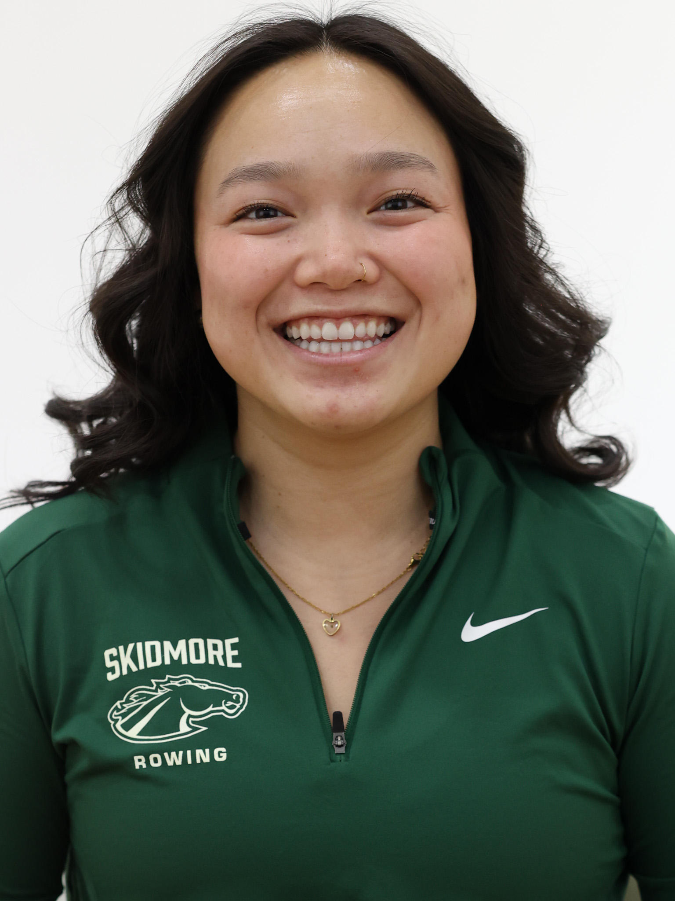
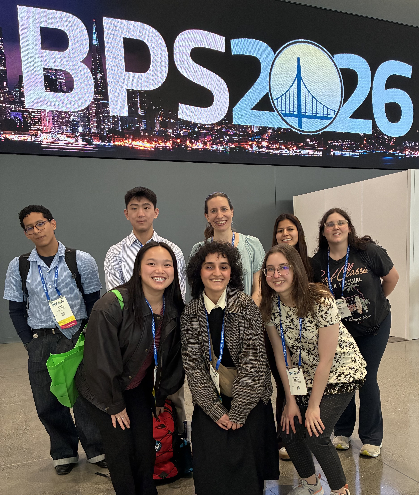
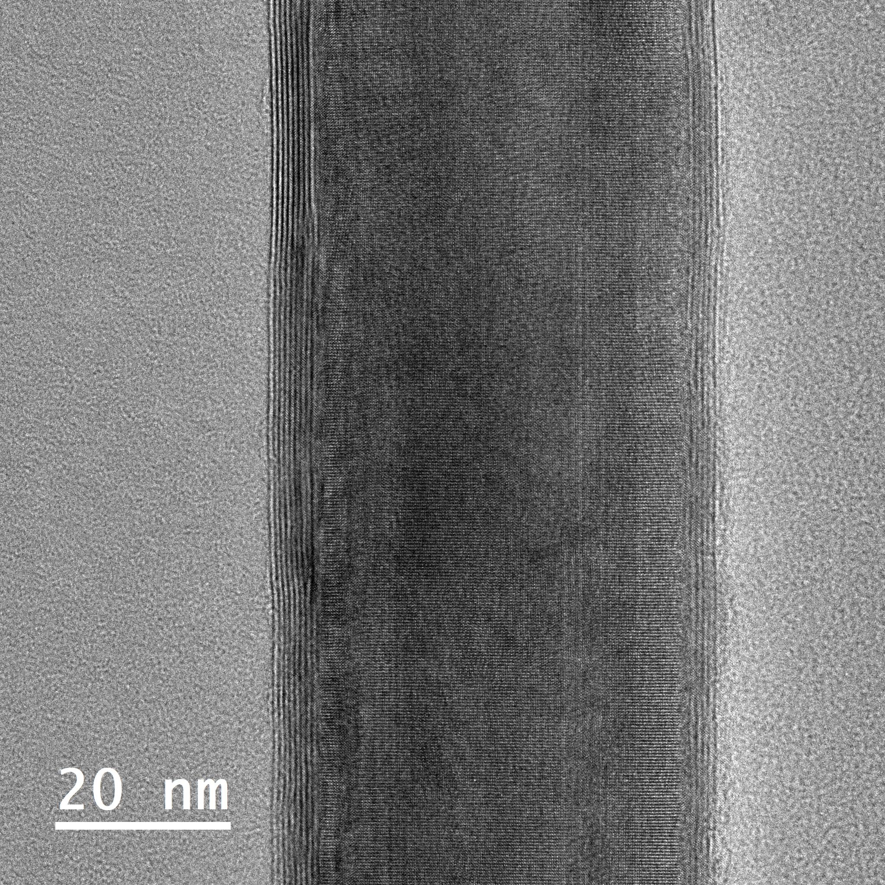
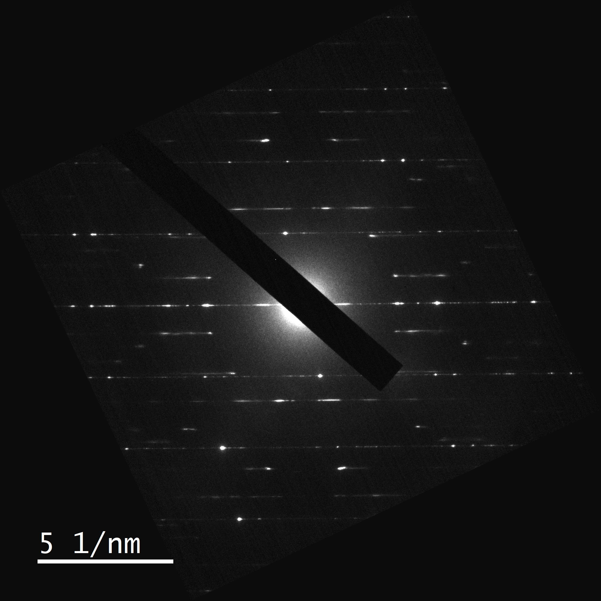
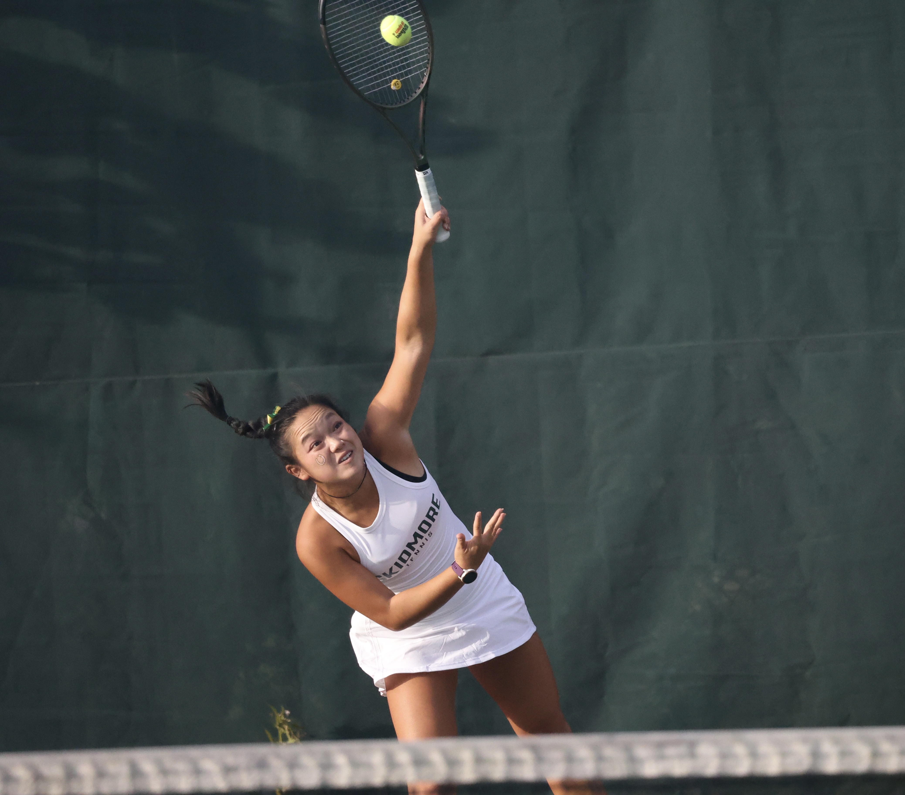
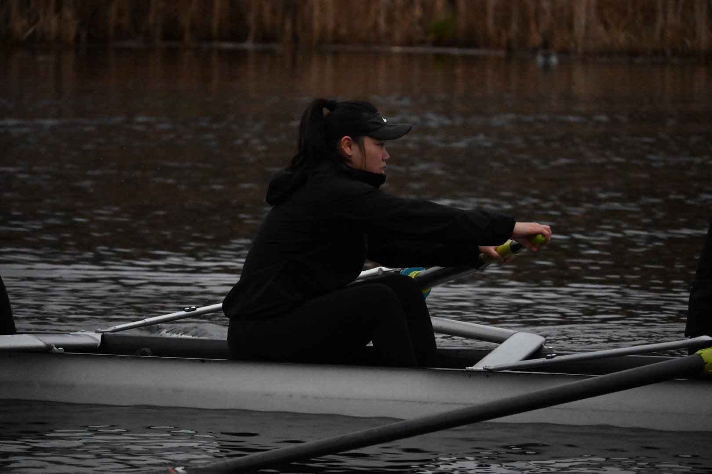

Hi, I'm J. Beilynn Geiss.
I am a Magna Cum Laude Physics graduate and Phi Beta Kappa member with a strong background in experimental characterization and computational Molecular Dynamics. Driven by the philosophy that "Creative Thought Matters," I am eager to apply my analytical precision and collaborative leadership to drive innovation in the clean energy and pharmaceutical sectors.

Quick Intro
Physics Graduate • Experimental Scientist • Computational Researcher
Driven by the belief that creative thought matters and eager to innovate in clean energy and pharmaceuticals.
About Me
I am a Magna Cum Laude Physics graduate and Phi Beta Kappa member with specialized experience in high-resolution experimental characterization and computational Molecular Dynamics. My work combines analytical rigor, technical precision, and collaborative leadership.
Education
Skidmore College | Saratoga Springs, NY
B.A. in Physics | GPA: 3.9 / 4.0
May 2026
Honors: Phi Beta Kappa, Physics honor society, German honor society, Mathematics honor society.
Targeting
Materials Scientist · Research Associate · Quality Control Specialist
Full-time roles starting July 2026
Track Record
3 Research Positions · 1 Senior Thesis · 4 Years Varsity Athletics
Nanotechnology · Biophysics · Materials Characterization · Leadership
Toolbox
A blend of hands-on laboratory expertise and computational modeling skills developed through intensive undergraduate research.
Technical & Lab
- Microscopy: Transmission Electron Microscopy (TEM), Electron Diffraction.
- Spectroscopy: UV-Vis, IR Spectroscopy, Quantum Chemistry & Spectroscopy.
- Characterization: Cyclic Voltammetry, Sample Preparation, 3D Printing.
- Documentation: SOP Development, Quantitative Data Analysis, Technical Writing.
Programming & Data
- Languages: Python (NumPy, Pandas, Matplotlib), C++, MATLAB (basic), Mathematica (basic).
- Tools: Molecular Dynamics Simulations, DigitalMicrograph, PETS2, Bruker software, Excel.
Languages
- English: Native
- German: Intermediate
- Spanish: Biliteracy Certification
Experience
Experimental Characterization
Experienced in operating Transmission Electron Microscopes (TEM) and conducting high-resolution analysis with strong attention to detail.
Laboratory Operations
Authored comprehensive Standard Operating Procedures (SOPs) that improved laboratory efficiency and data reproducibility.
Work History
Department of Chemistry | Colorado State University
Undergraduate Research Fellow | May 2025 – Aug 2025
Contributed to experimental materials science research through microscopy, data analysis, and laboratory protocol execution.
Computational Biophysics Lab | Skidmore College
Lab Member & Senior Mentor | Sept 2023 – May 2026
Supported computational biophysics projects, mentored junior students, and helped advance research in molecular dynamics.

Dr. Ball Lab at the 2026 Biophysical Society Annual Meeting.
Analytical Research Core | Colorado State University
Undergraduate Research Assistant | June 2024 – Aug 2024
Assisted with technical protocol development and analytical research workflows in a collaborative lab environment.

TEM image of individual tungsten disulfide (WS2) nanotube captured by Dr. Roy Geiss in the Analytical Research Core.

Electron diffraction image of WS2 nanotube captured by Dr. Roy Geiss in the Analytical Research Core.
Beyond the Lab
Skidmore College Varsity Athletics
Tennis and Crew Athlete | Aug 2022 – May 2026
Maintained high academic performance while competing in varsity athletics and contributing to team culture.


Residential Life | Skidmore College
Resident Assistant & Community Assistant | Aug 2023 – May 2026
Created inclusive living environments and supported student development through peer leadership.
First Year Experience | Skidmore College
Peer Mentor | Aug 2025 – May 2026
Guided first-year students through academic transition, community-building, and campus resources.
Contact
Connect with me on LinkedIn.
Email Me